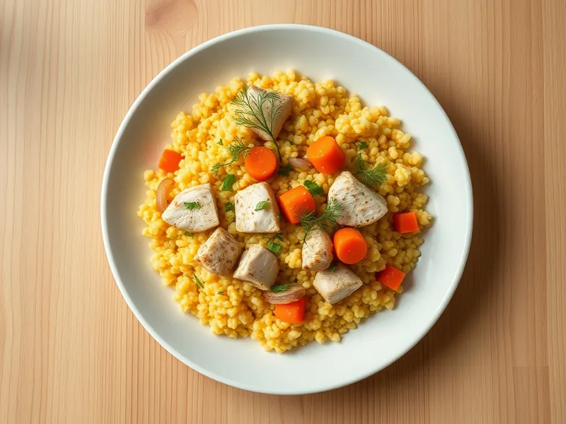

Фото: Иллюстрация ИИ, Cloudflare Workers AI
Пшено с курицей и овощами
Рассыпчатое пшено, потушенное с курицей, морковью и луком в одной кастрюле
30 мин4 порц.441 ккал на порциюБ 32 · Ж 12 · У 52Русская кухня
Открыть в приложении: порции, таймеры, список покупок
Продукты на 4 порц.
- Пшено1,5 стак.
- Куриное филе400 г
- Лук репчатый1 шт
- Морковь1 шт
- Чеснок2 зуб.
- Растительное масло2 ст. л.
- Вода3,5 стак.
- Соль2 ч. л.
- Перец чёрный молотыйпо вкусу
- Укроп по желаниюпо вкусу
Как готовить
- Промойте пшено несколько раз, последний раз залейте кипятком на 1 минуту и слейте, так уйдёт горечь.
- Нарежьте филе кубиками 2 см, лук мелко, морковь натрите на крупной тёрке.
- Разогрейте масло в кастрюле с толстым дном на сильном огне и обжарьте курицу 4 минуты. Добавьте лук и морковь и жарьте на среднем огне 4 минуты.
- Всыпьте пшено, влейте горячую воду, посолите, поперчите и добавьте целые зубчики чеснока.
- Доведите до кипения, накройте крышкой и готовьте на слабом огне 18-20 минут, пока вода не впитается, а зёрна не станут мягкими.
- Снимите с огня, дайте постоять под крышкой 3 минуты, перемешайте и посыпьте укропом.
Совет. Пшено горчит, если его не обдать кипятком перед варкой. Жёлтая крупа без серого налёта свежее и вкуснее.